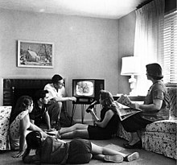
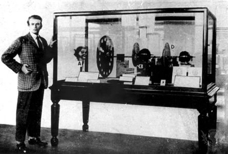
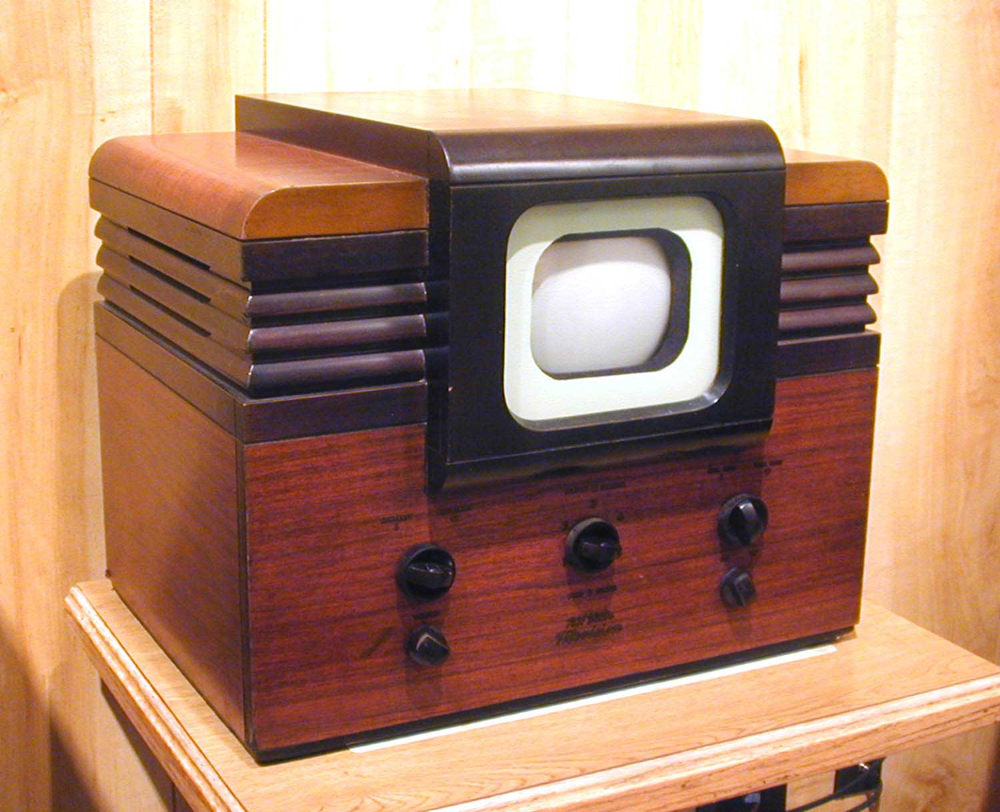
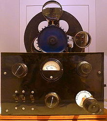
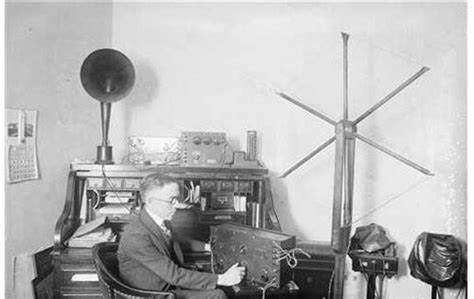

Home
Gallery
Payment
Contact Us

Product 1 :-Mechanical Television: John Logie Baird invented the mechanical television a precursor to the modern television in 1925

Product 2:-Early Product 2:- Electronic Television RCA TT-5

Product 3:- 1884: German technician and inventor Paul Nipkow managed to transmit static image with 18 horizontal lines of resolution.

Product 4:-1939: The early electronic Television, the Radio Corporation of America introduced and explained television to the American public at a World Fair.